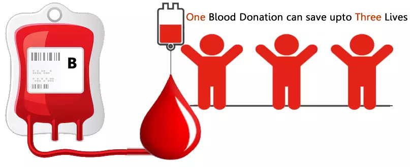

After donating blood, the body works to replenish the blood loss. This stimulates the production of new blood cells and in turn, helps in maintaining good health.
COMPATIBLE BLOOD TYPE DONORS
| BLOOD TYPE |
RECIEVE BLOOD FROM |
DONATE BLOOD TO |
| A+ |
A+ , A- , O+ , O- |
A+ , AB+ |
| O+ |
O+ , O- |
O+ , A+ , B+ , AB+ |
| B+ |
B+ , B- , O+ , O- |
B+ , AB+ |
| AB+ |
Everyone |
AB+ |
| A- |
A- , O- |
A+ , A- , AB+ , AB- |
| O- |
O- |
Everyone |
| B- |
B- , O- |
B+ , B- , AB+ , AB- |
| AB- |
AB- , A- , B- , O- |
AB+ , AB- |
TYPES OF DONATION
The average human body contains about five liters of blood,
which is made of several cellular and non-cellular components such as Red blood cell, Platelet, and Plasma.
Each type of component has its unique properties and can be used for different indications.
The donated blood is separated into these components by the blood centre and one donated unit can save upto four lives depending on the number of components separated.
Packed red blood cell
Plasma
Platelet
What is it?
Whole blood is collected from the donor and
then centrifuged and red cell, platelets and plasma are separated.
The separated Red cells are mixed with a preservative to be called as packed red blood cells.
Uses For?
Correction of severe anemia in a number of conditions and blood loss in case of child birth, surgery or trauma settings
How long does it take to donate?
15-30 minutes to donate including the pre-donation check-up.
How often can I donate?
Male donors can donate again after 90 days and female donors can donate again after 120 days.
Lasts For?
Red cells can be stored for 42 days at 2-6 degrees Celsius.
Who can donate?
You need to be 18-65 years old, weigh 45kg or more and be fit and healthy.
What is it?
The straw-colored liquid in which red blood cells, white blood cells, and platelets float in is called plasma.
Contains special nutrients which can be used to create 18 different types of medical products to treat many different medical conditions.
Plasma can be obtained from the collected whole blood after red blood cells and platelets have been separated.
Additionally, it can also be collected using apheresis equipment where other components are returned to the donor.
The former is a common method of plasma preparation in our country.
Uses For?
Used for bleeding patients with coagulation factor deficiency such as hemophilia A and B, von Willebrand disease etc. also used in cases of blood loss due to trauma.
How long does it take to donate?
15-30 minutes to donate including the pre-donation check-up.
How often can I donate?
Similar to the red cell donation.
Lasts For?
Plasma after separation if frozen below -30 degrees can be stored up to one year.
Who can donate?
The donation criteria are similar to that of red blood cells. However, for apheresis plasma collection, the minimum weight is 50 kgs.
What is it?
These are cellular elements in blood that wedge together to help clot and reduce bleeding.
Always in high demand, Vital for people with low platelet count, like hematology and cancer patients.
Uses For?
Conditions with very low platelet count such as Cancer, blood diseases, trauma, dengue, etc.
How long does it take to donate?
45-60 minutes to donate. 2-3 hours for pre-donation screening
How often can I donate?
Every 2 weeks but should not exceed more than 24 times in a year.
Lasts For?
Can be stored for 5 days at 20-24 degrees Celsius.
Who can donate?
One can donate whole blood from which the blood center will separate platelets from other components.
Criteria similar to whole blood donation apply. Alternatively,
one can donate using apheresis equipment where only platelets are collected and rest components are returned back to donate.
One needs to satisfy whole blood criteria and pre-donation screening which include negative infectious markers and platelet count >1,50,000 per microlitre of blood.
Weight should be >50kgs.
Thanks For visiting our page